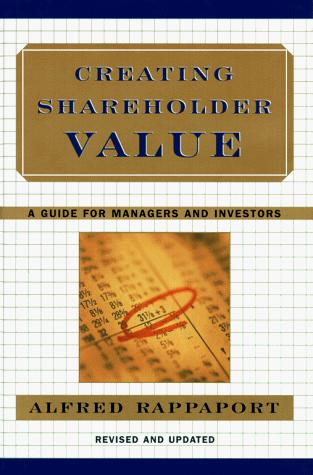

阿尔弗雷德·拉帕波特（Alfred Rappaport）是美国西北大学凯洛格管理学院的荣誉教授，也是"股东价值分析"这一管理框架的奠基人之一。《创造股东价值》初版于1986年，修订版于1998年由西蒙与舒斯特出版社重新发行，是拉帕波特将其学术研究转化为可操作工具的集大成之作。本书的出版正值美国企业界经历杠杆收购浪潮与股东权利运动的关键时期，它为管理层、董事会和投资者提供了一套统一的语言——以股东价值作为衡量企业决策优劣的共同尺度。这套框架深刻影响了此后数十年美国企业的战略规划与资本配置实践。
本书的核心论点是：企业的最终目标是创造股东价值，而传统会计利润——无论是每股收益（EPS）还是净资产收益率（ROE）——都无法准确反映真实的价值创造。拉帕波特提出了"股东价值分析"（SVA）框架，以自由现金流的折现值作为企业价值的根本衡量标准。他识别出驱动股东价值的七个核心变量：销售增长率、营业利润率、所得税率、营运资本投资、固定资产投资、资金成本以及竞争优势持续期。这七个变量的组合决定了企业在任何给定的战略情景下所能创造的真实价值，从而使战略规划和投资决策得以摆脱对会计报表的依赖，回归到现金流的本质。书中还专门讨论了并购定价、管理层激励设计、股票回购决策等具体场景下如何应用这一框架，使理论主张具有直接的实践价值。
《创造股东价值》出版后，迅速成为华尔街投资银行、并购顾问机构和大型企业战略部门的核心参考文本。瑞士信贷第一波士顿证券公司股票研究部总经理迈克尔·莫布辛（Michael J. Mauboussin）在推荐此书时指出，拉帕波特对价值驱动因素的系统梳理为投资分析提供了严谨的理论基础。希尔顿酒店集团时任总裁兼CEO斯蒂芬·博伦巴赫（Stephen F. Bollenbach）将本书列为理解企业资本配置决策的必读文献。本书与拉帕波特此后合著的《预期投资》（Expectations Investing）共同构成了以现金流为核心的基本面分析体系。
对于关注价值投资与企业财务分析的读者而言，《创造股东价值》提供的是一套能够贯穿战略规划、绩效评估与投资决策的统一分析语言。拉帕波特的贡献在于，他将"股东价值最大化"从一句口号转变为可量化、可操作的分析工具，并清晰地揭示了会计利润与经济价值之间的根本差异。在一个充斥着短期主义与报表管理的商业环境中，这套框架的核心洞察——企业的价值最终由未来现金流的现值决定，而非当期的会计数字——依然是任何严肃的管理者和投资者所必须深刻理解的基本命题。